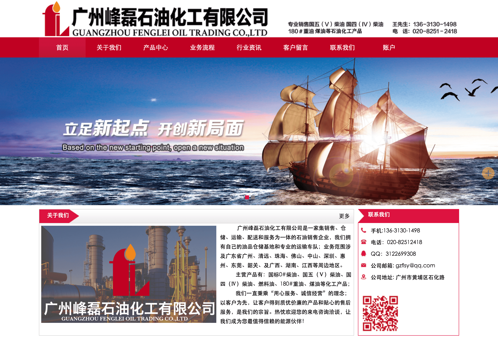
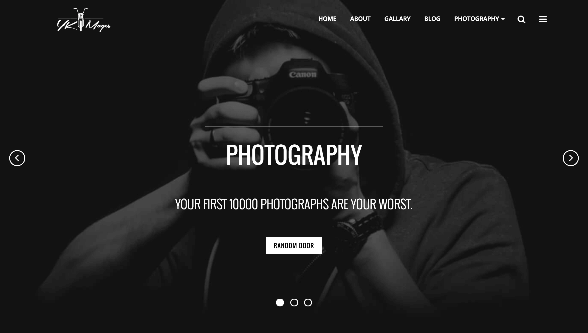
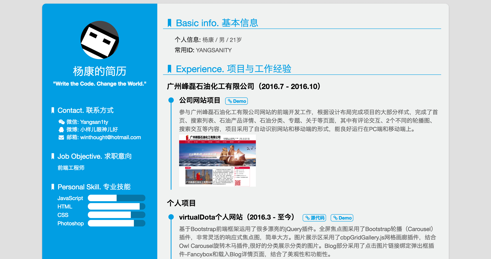

-
- Basic info. 基本信息
- 个人信息: 杨康 / 男 / 21岁
- 学历: 本科
- 常用ID: YANGSANITY
-
- Experience. 项目与工作经验
广州峰磊石油化工有限公司（2016.5 - 2016.10）
-
公司网站项目 Demo
工作职责：
(1)网站的设计与制作
(2)产品图片信息的处理
(3)负责与公司负责人讨论网站布局的研讨
(4)负责网站制作过程监控与跟踪（硬件与软件）
参与广州峰磊石油化工有限公司网站的前端开发工作，根据设计布局完成项目的大部分样式，完成了首页、搜索列表、石油产品详情、石油分类、专题、关于等页面，其中有评论交互、2个不同的轮播图、搜索交互等内容，项目采用了自动识别网站和移动端的形式，能良好运行在PC端和移动端上。

个人项目
-
virtualDota个人网站（2016.3 - 至今） 源代码 Demo
基于Bootstrap前端框架运用了很多漂亮的jQuery插件。全屏焦点图采用了Bootstrap轮播（Carousel）插件，非常灵活的响应式焦点图，简单大方。图片展示区采用了cbpGridGallery.js网格画廊插件，结合Owl Carousel旋转木马插件,很好的分类展示分类的图片。Blog部分采用了点击图片链接绑定弹出框插件-Fancybox和载入Blog详情页面，结合了美观性和功能性。
 -
yangkang.vip 个人简历（2016.9 - 至今） 源代码 Demo
设计简洁、内容完善的静态简历页面，可以用浏览器直接生成合适尺寸的PDF简历
 -
jCarrousel（2015.8） 源代码 Demo
一个3D轮播图 jQuery 插件，实现了3D轮播效果，可以自适应宽度、自适应图片数量，有方便的切换按钮，另外实现了播放、停止、切换到任意一张图片的API

-
- Skill. 技能清单
Web前端
-
HTML / CSS / JavaScript
能够编写语义化的 HTML，模块化的 CSS，完成合理的布局。
理解JavaScript面向对象原理。
-
Bootstrap
了解Bootstrap前端框架和开发流程。
能够熟练应用HTML/CSS/JavaScript技术，开发符合W3C标准的网站前端页面。
其他
-
学习能力强，喜欢不断学习钻研新奇的技术
严重强迫症，不能忍受界面一个像素的偏差，同样不能忍受代码格式一个空格的偏差
是一个有趣的人，喜欢电影、音乐、健身、结交有趣的朋友。(o^∇^o)